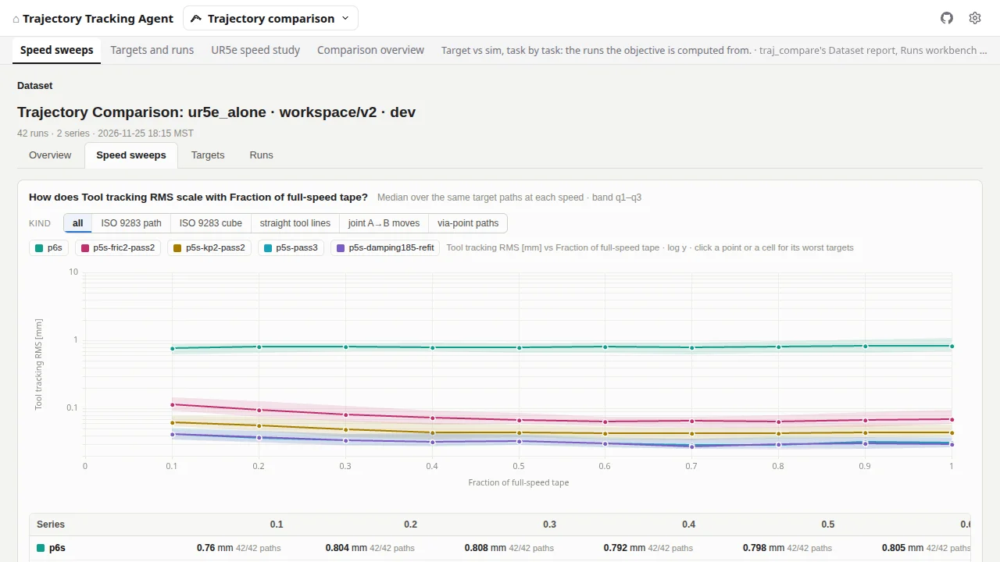

UR5e tracking across speeds
0.02971 mm at full speed. The leading controller passed all five gates on 42 of 42 simulated dev trajectories at 1.0. Its median error was 0.04210 mm at 0.1 and lowest at 0.7 (0.02766 mm).

Tracking error by speed
Five controller configurations ran the same 42 simulated dev trajectories at each of ten speeds. Every point is the median per-trajectory tool RMS over moving samples. Bands show the middle half of the targets. The log scale keeps the closely spaced curves readable. 2,100 of 2,100 runs passed every gate.
Open the stock chart and its measurement table
At nominal speed 1.0
| Controller | Median RMS (mm) | All gates pass | Peak simulated speed (°/s) |
|---|---|---|---|
| p5s-damping185-refit | 0.02971 | 42/42 | 181.254 |
| p5s-pass3 | 0.03133 | 42/42 | 181.397 |
| p5s-kp2-pass2 | 0.04475 | 42/42 | 181.081 |
| p5s-fric2-pass2 | 0.06991 | 42/42 | 180.645 |
| p6s | 0.83385 | 42/42 | 181.050 |
Time spent at each speed
There are two speed measures. The nominal fraction describes how far the whole tape was slowed from its fastest saved timing. Instantaneous utilization is the fastest joint at that moment as a fraction of 180°/s.
Frozen dataset · joint-speed utilization
All 54 frozen tapes have nominal speed 1.0. Across their 128.16 s, the planned joints spend 20.96 s (16.4%) above 90% of the speed limit. The first band includes holds.
| Utilization | Elapsed seconds | |
|---|---|---|
| 0–10% | 43.34 | |
| >10–20% | 8.11 | |
| >20–30% | 7.83 | |
| >30–40% | 8.08 | |
| >40–50% | 8.70 | |
| >50–60% | 8.75 | |
| >60–70% | 7.71 | |
| >70–80% | 7.66 | |
| >80–90% | 7.02 | |
| >90–100% | 20.96 | |
Matched sweep · nominal speed
Each fraction has 42 dev trajectories, or 420 tapes across the sweep. The times count each tape once across all controllers.
| Fraction | Elapsed seconds | |
|---|---|---|
| 0.1 | 993.60 | |
| 0.2 | 496.80 | |
| 0.3 | 331.34 | |
| 0.4 | 248.51 | |
| 0.5 | 198.72 | |
| 0.6 | 165.88 | |
| 0.7 | 142.13 | |
| 0.8 | 124.35 | |
| 0.9 | 110.56 | |
| 1.0 | 99.36 | |
Simulated time at each instantaneous speed · leading controller, nominal 1.0
The joint velocities are from the simulator at 100 Hz. This covers 99.36 s of dev trajectories, including 1.77 s above 180°/s. Peak sampled speed was 181.254°/s.
| Utilization | Elapsed seconds | |
|---|---|---|
| 0% | 0.02 | |
| >0–10% | 34.64 | |
| >10–20% | 6.65 | |
| >20–30% | 6.13 | |
| >30–40% | 6.42 | |
| >40–50% | 6.90 | |
| >50–60% | 6.29 | |
| >60–70% | 5.45 | |
| >70–80% | 5.99 | |
| >80–90% | 5.51 | |
| >90–100% | 13.59 | |
| >100% | 1.77 | |
UR5e joint-limit audit
UR rates all six joints at 180°/s. The frozen references use that cap and peaked at 179.99855°/s. The simulation gate permits 189°/s at the physics rate, so a run can pass the gate while exceeding the 180°/s planning cap. The installed arm’s tracking and active safety limits remain unverified.
| Joint | UR rating (°/s) | Frozen target peak (°/s) | Simulated winner peak (°/s) |
|---|---|---|---|
| Base | 180 | 179.921 | 181.254 |
| Shoulder | 180 | 177.083 | 177.933 |
| Elbow | 180 | 179.999 | 181.139 |
| Wrist 1 | 180 | 178.785 | 179.334 |
| Wrist 2 | 180 | 179.959 | 180.645 |
| Wrist 3 | 180 | 179.970 | 180.518 |
UR’s user manual lists ±160° elbow travel and ±360° on the other axes. Its technical sheet lists ±360° for the elbow. The model plans to approximately ±180° at the elbow, close to the ROS 2 planning range. Every frozen reference sample is inside ±160°. The local acceleration and jerk caps are timing inputs, with no corresponding UR ratings in the cited joint-limit files.
UR5e user manual · UR5e technical sheet · UR ROS 2 joint limits · UR safety configuration